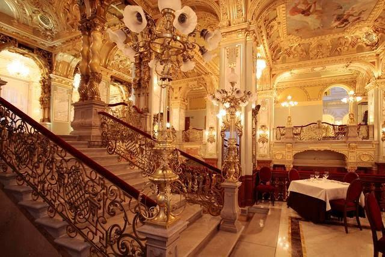

<div class="section-gap">
  <div class="container">
    <div class="section-title-wrapper mb-5">
      <div class="row">
        <div class="col-sm-12 col-md-9 mx-auto text-center"></div>
      </div>
    </div>
    <div class="row">
      <div class="col-sm-12">
        <div class="card border-0 text-center">
          <h2>The Tamborrada of Donostia a drum festival in Spain</h2>
        </div>
        <div>
          <p>
            The Tamborrada of Donostia, a festive drum festival held every year
            on January 20 in the city of San Sebastián, Spain. Its origins date
            back to the War of Independence around 1813, when Napoleon&#39;s
            troops invaded San Sebastian. During the French occupation, women
            went to collect water at one of the city&#39;s two fountains. No one
            knows where the idea came from, but suddenly the women started
            playing music with their jugs on the way to the fountains to fool
            the soldiers in their daily procession.
          </p>
          <p>
            The festival lasts for 24 hours. Participants, dressed as cooks and
            soldiers, march in companies across the city. The celebration ends
            at midnight, when people congregate at the Konstituzio Plaza and the
            city flag is simultaneously lowered at various locations.
          </p>
          
        </div>
      </div>
    <div class="col-sm-12">
      <div class="card border-0 text-center">
        <h2>The Hungarian Festival - Mohacsi Busójárás</h2>
      </div>
      <div>
        <p>
          Mohacsi Busójárás (Hungarian, meaning "Busó-walking") is an annual
          celebration of the Šokci living in the town of Mohács, Hungary. The
          celebration features Busós (people wearing traditional masks) and
          includes folk music, masquerading, parades and dancing. The festival
          is celebrated to scare away winter and welcome a warm and fertile
          spring.
        </p>
        <p>
          Busójárás lasts six days, usually during February. It starts on a
          Thursday, followed by the Kisfarsang carnival on Friday, with the
          biggest celebration, Farsang vasárnap on the seventh Sunday before
          Easter Sunday. The celebration then ends with Farsangtemetés on the
          following Tuesday. There are mask-making events, competitions for
          children’s costumes and numerous stalls selling food and drink. On
          Shrove Tuesday there’s even a bonfire where the Farsang coffin is set
          alight – the coffin symbolizing winter and therefore, its end giving
          way to spring. These traditional festivities have been inscribed on
          the Representative List of the Intangible Cultural Heritage of
          Humanity of the UNESCO in 2009.
        </p>
        
      </div>
    </div>
    <div class="col-sm-12">
      <div class="card border-0 text-center">
        <h2>Delos Island</h2>
      </div>
      <div>
        <p>
          Delos Island near the center of the Cyclades archipelago, is one of
          the most important mythological, historical and archaeological sites
          in Greece. According to Greek mythology, Apollo was born on this small
          island in the Cyclades archipelago. The sanctuary of Apollo attracted
          pilgrims from all over Greece and Delos was a rich trading port. The
          island bears traces of successive civilizations in the Aegean world,
          from the 3rd millennium BC. in the early Christian era. The
          archeological site is extremely extensive and rich and conveys the
          image of a large cosmopolitan port of the Mediterranean.
        </p>
        <p>
          Delos had a place as a sanctuary for a millennium before Olympic Greek
          mythology made it the birthplace of Apollo and Artemis. The
          excavations began in 1873 by the Archaeological School of Athens and
          continued from 1904 to 1914. The Archaeological Museum of Delos was
          built in 1904 by the Archaeological Society and expanded in 1931 and
          1972. Delos was declared a World Heritage Site by UNESCO in 1990.
        </p>
        
      </div>
    </div>
    <div class="col-sm-12">
      <div class="card border-0 text-center">
        <h2>Diocletian's Palace in Croatia</h2>
      </div>
      <div>
        <p>
          Diocletian's Palace is an ancient palace built for the Roman emperor
          Diocletian in the early fourth century AD, which today is about half
          the old town of Split, Croatia. It is a pole of attraction for many
          visitors from all over the world every year.
        </p>
        <p>
          The ruins of the palace are part of the historic core of Split, which
          in 1979 was registered by UNESCO as a World Heritage Site.
        </p>
        
      </div>
    </div>
    <div class="col-sm-12">
      <div class="card border-0 text-center">
        <h2>Dubrovnik</h2>
      </div>
      <div>
        <p>
          Dubrovnik is a city on the Adriatic Sea in southern Croatia. It is one
          of the most popular tourist destinations in the Mediterranean Sea, a
          port and the center of Dubrovnik-Neretva County.
        </p>
        <p>
          In 1979, the city of Dubrovnik was inscribed on the UNESCO World
          Heritage List. The history of the city probably dates back to the 7th
          century, when the city known as Ragusa was founded by refugees from
          Epidaurus. Although severely damaged by an earthquake in 1667,
          Dubrovnik managed to preserve its beautiful Gothic, Renaissance and
          Baroque churches, monasteries, palaces and fountains.
        </p>
        <p>
          Fun fact the city of Dubrovnik have been a popular filming location
          for the fictional city of King's Landing in the HBO television series,
          Game of Thrones.
        </p>
        
      </div>
    </div>
    <div class="col-sm-12">
      <div class="card border-0 text-center">
        <h2>The museum of Neolithic Art in Rhodes Island, Greece</h2>
      </div>
      <div>
        <p>
          The reopening of the museum is an attraction for visitors from all
          over the world.
        </p>
        <p>
          The exhibition "Biography" includes 50 exhibits, which do not follow a
          chronological approach, leaving viewers to roam freely and follow
          their own course in space.
        </p>
        <p>
          Due to the pandemic the museum is closed, but visitors can browse
          through online visits.
        </p>
        <p>Click the link and start your tour!</p>
        <p>
          <a
            href="https://www.google.com/url?q=https://exhibitions.mgamuseum.gr/2020-biographies/el/?fbclid%3DIwAR1tvEjD0fTKvdpxP9tsXRq8IpwwOZinpEcR8kEc-xLAOT-V5CEVrb8V7A4&amp;sa=D&amp;source=editors&amp;ust=1613829315242000&amp;usg=AOvVaw2vC63C9q3VT7UBYyKe0bIi"
            >https://exhibitions.mgamuseum.gr/2020-biographies/e</a
          >
        </p>
        
      </div>
    </div>
    <div class="col-sm-12">
      <div class="card border-0 text-center">
        <h2>The Roman aqueduct in Spain</h2>
      </div>
      <div>
        <p>
          If there is one place worth visiting, it is Segovia, a compact Spanish
          city in the southeast of the Autonomous Community of Castile. It is
          the capital and the most densely populated municipality in the
          province of Segovia.
        </p>
        <p>
          The city is famous for its historic buildings, one of which is, the
          Roman aqueduct in the city center.
        </p>
        <p>
          The Roman aqueduct of Segovia, probably built c. 50 AD, is extremely
          well preserved. This impressive structure, with its two arches, is
          part of the magnificent historic city of Segovia.
        </p>
        <p>
          The city center was declared a UNESCO World Heritage Site in 1985.
        </p>
        
      </div>
    </div>
    <div class="col-sm-12">
      <div class="card border-0 text-center">
        <h2>Tomas Libertiny work with bees for art.</h2>
      </div>
      <div>
        <p>
          Tom&aacute;&scaron; Libert&iacute;ny a Slovak artist living in the
          Netherlands has a great love for art and nature. For this reason he
          decided to combine them , creating a sculp as a base which was made by
          60.000 bees. The bust depicts Queen Nefertiti of Egypt and was named
          "Eternity".
        </p>
        <p>The bees worked on it creating an incredible masterpiece.</p>
        <p>On this page you can see his work!</p>
        <a
          href="https://www.google.com/url?q=http://www.tomaslibertiny.com/?fbclid%3DIwAR2f1TsK5f-lzA9tXJ2yaf9Z-PwSJZ1EMDhJfuG2NjpP01qNchBP9CWCgGg&amp;sa=D&amp;source=editors&amp;ust=1613829315245000&amp;usg=AOvVaw0kwZxdnBukLvP6i89lTl9u"
          >http://www.tomaslibertiny.com/</a
        >
      </div>
    </div>
  <div class="col-sm-12">
    <div class="card border-0 text-center">
      <h2>The New York Caf&eacute; In Budapest</h2>
    </div>
    <div>
      <p>
        Budapest is the capital of Hungary and at the same time a beautiful
        enchanting city to explore. Among the many walks in the city and its
        museums, visitors need to relax and for this reason they go to various
        cafes. But there is a cafe that combines history with entertainment, the
        New York Cafe. His story began when Max Aufrich, a Hungarian teacher,
        came to Budapest. Thanks to his ambitions, he soon became a successful
        lawyer and traveled to Paris, where, accompanied by the director of the
        New York Insurance Company, he founded the Hungarian network of the
        company. Shortly after the procedure, the new department needed a room.
      </p>
      <p>
        The idea was a majestic, eclectic building in the city center. Alajos
        Hauszmann was commissioned to plan the design and with the assistance of
        Fl&oacute;ris Korb and K&aacute;lm&aacute;n Giergl, he designed the
        lavish, four storied palace with the Cafeon the ground floor. After its
        1894 rendition, the luxurious New York Cafe soon became the center of
        literary and artistic life, as it went down in Hungarian culture-history
        as the favorite place of rendezvous of artists, writers and poets.
      </p>
      <p>
        So if you ever visit Budapest you should definitely go to the beautiful
        cafe but it would be good to make a reservation because it always has a
        long waiting list!
      </p>
      <p>Take a look at its site!</p>
      <p>
        <a
          href="https://www.google.com/url?q=https://newyorkcafe.hu/en/?fbclid%3DIwAR25rg3gaoeh_-ru9MtA6039jbgOkogv9J62r-IBZRzykr-QVyjWGcpWeeY&amp;sa=D&amp;source=editors&amp;ust=1613829315247000&amp;usg=AOvVaw1-wrS32sqHxE-khYOBgTEJ"
          >https://newyorkcafe.hu/en/</a
        >
      </p>
      
    </div>
  </div>
  <div class="col-sm-12">
    <div class="card border-0 text-center">
      <h2>G&ouml;bekli Tepe in Turkey</h2>
    </div>
    <div>
      <p>
        G&ouml;bekli Tepe is an archaeological site in the Southeastern Anatolia
        Region of Turkey. The site was first noted in a survey conducted by
        Istanbul University and the University of Chicago in 1963. It is a
        recognized monument by UNESCO.
      </p>
      <p>More details about the archeological site</p>
      <p>
        G&ouml;bekli Tepe has more than 200 pillars in about 20 circles are
        known through geophysical surveys. Each pillar has a height of up to 6 m
        20 ft and weighs up to 10 tons. They are fitted into sockets that were
        hewn out of the local bedrock. In the second phase, belonging to the
        Pre-Pottery Neolithic B , the erected pillars are smaller and stood in
        rectangular rooms with floors of polished lime. The site was abandoned
        after the Pre-Pottery Neolithic B . Younger structures date to classical
        times. It is a source of mystery for its operation to this day.
      </p>
      
    </div>
    <div class="col-sm-12">
      <div class="card border-0 text-center">
        <h2>Virtual tour day 3 - Versailles, France</h2>
      </div>
      <div>
        <p>
          Versailles was until 1660 a simple small palace that served mainly as
          a hunting lodge. After 1660 King Louis XI decided to expand the
          palace, and not to demolish the original building, in order to make
          Versailles the royal palace and the most glorious palace in Europe.
          The palace of Versailles consists of three parts, the main part where
          the U-shaped royal family lived, and two other wings to the right and
          left of the main building where the nobles, the clergy and the
          ministers lived. In this tour you will get to know the history of the
          palace, you will meet works of art and you will visit the famous
          gardens.
        </p>
        <p>So open the link and enjoy!</p>
        <p>
          <a
            href="https://www.google.com/url?q=https://artsandculture.google.com/project/versailles-never-seen-before?fbclid%3DIwAR3v10fS1eqe-GC23sg7JzvhpwzVWjdzItpN8vQMQS0nv63qzAjaR2Iw0uo&amp;sa=D&amp;source=editors&amp;ust=1613829315249000&amp;usg=AOvVaw0nCKYi9tyH6Izq6mGQ4jvb"
            >https://artsandculture.google.com/.../versailles-never...</a
          >
        </p>
        
      </div>
    </div>
    <div class="col-sm-12">
      <div class="card border-0 text-center">
        <h2>Virtual tour day 2 - The Acropolis, Greece</h2>
      </div>
      <div>
        <p>
          This visit concerns Greece and specifically the Acropolis. With
          history that count from the 8th century BC. The rift with the Persians
          in 480 BC leads to decline for 30 years. Fortunately, with the peace
          agreement that followed with the Persians, it led to the construction
          work from 447 BC to 406 BC, which created the Parthenon, the Walls,
          the Propylaea, the Erechtheion and the Temple of Athena Nike. In this
          virtual walk you will visit all the historical monuments. The whole
          history of Greece is in front of you, click the link and enjoy!
        </p>
        <p>
          <a
            href="https://www.google.com/url?q=https://l.facebook.com/l.php?u%3Dhttps%253A%252F%252Fwww.acropolisvirtualtour.gr%252F%253Ffbclid%253DIwAR3H4vxBaKzudW8BDfOHqneJAg-TmaQ1KyztI-RQdNHPJKi6io3zdoKIcKM%26h%3DAT1OHFm8hcGk5ptAdCEcPWuSgPh4iOx0uDB1tjdw3pp8QihNXql1FKhLXLeKOjUU9pLep-B6eg6VG657B01L3TnTYIBw17livqT8pd0G5ziPEK7ZSTggy4OJ3SrTLid0jpCJ%26__tn__%3D-UK-R%26c%255b0%255d%3DAT2Cx8hAup5eWvqK6ReoFHyL3cI12HVaIobG5Qh__Vcg6ID1YTiwFUdZo8TWKfokd81lFCDOqu-X9ASeg2GY9DQvIkcs8HIHloXT9QGdamYweGqL4oK8s4x-vQYbfwmdm20XuufCMZGHJ51QEjJ0hp2SgPfergam7WmQSQWMqX-uFu611LXWtOzOtplfBP0S40zcru646G8-95uj&amp;sa=D&amp;source=editors&amp;ust=1613829315251000&amp;usg=AOvVaw2_EMlq2y9_Ha_b3pcl7CEq"
            >https://www.acropolisvirtualtour.gr/</a
          >
        </p>
        
      </div>
    </div>
    <div class="col-sm-12">
      <div class="card border-0 text-center">
        <h2>Virtual tours day 1 &ndash; British Museum, London</h2>
      </div>
      <div>
        <p>
          The pandemic that has hit the whole planet prevents us from traveling
          and meeting new cultures. So we have to adapt to this situation
          without losing the mood to know new things even from our computer
          screen. For this reason in the coming days we will upload 3 different
          museums in which there is an online free tour giving many people from
          all over the world the opportunity to visit and get to know the museum
          exhibits and study their history.
        </p>
        <p>
          Our first virtual visit is to the British Museum in London. His
          collections spawn more than 7 million items from all over the
          continent. There are 5 categories
        </p>
        <ul>
          <li>1. Art and design</li>
          <li>2. Living an dying</li>
          <li>3. Power and identity</li>
          <li>4. Religion and belief</li>
          <li>5. Trade and conflict.</li>
        </ul>
        <p>Click on the link and enjoy your tour!!</p>
        <p>
          <a
            href="https://www.google.com/url?q=https://l.facebook.com/l.php?u%3Dhttps%253A%252F%252Fbritishmuseum.withgoogle.com%252F%253Ffbclid%253DIwAR3v10fS1eqe-GC23sg7JzvhpwzVWjdzItpN8vQMQS0nv63qzAjaR2Iw0uo%26h%3DAT0GrtLKRiwUEqmfPsDsCo08o_Ju0jkKPzSKYxrpsgUGDVmnk3ZvFjZh0XnaqNuJNqgsmH5vGwM2va5vAYFq9CORoNCR2wm9-kQIeBF3UXM-PVYdfJGjvqhnDdtj564ggfE-%26__tn__%3D-UK-R%26c%255b0%255d%3DAT12DSITmJjd0UDveSBh-9n8r8zpj1ByXypDDe9cj4EU4DPv-4OsD2kq5Y6SHM5dU9kE9IMsjBu-jG0QeQnOkibNhcIUn30Wm1Xl0sphfJXfh_zzX4G57m3o8cp2bmRoeNTJ0QFhWt6b8GyHVN-stHf4WmH8XSwuednXUNPfDrF1D87eLm2qIuJS7lAOy9XrfWjNciHT4w5uw59i&amp;sa=D&amp;source=editors&amp;ust=1613829315253000&amp;usg=AOvVaw1GXZaFNLhfUF5vBUZUkEXF"
            >https://britishmuseum.withgoogle.com/</a
          >
        </p>
        
      </div>
    </div>
  </div>
</div>
</div>
</div>
